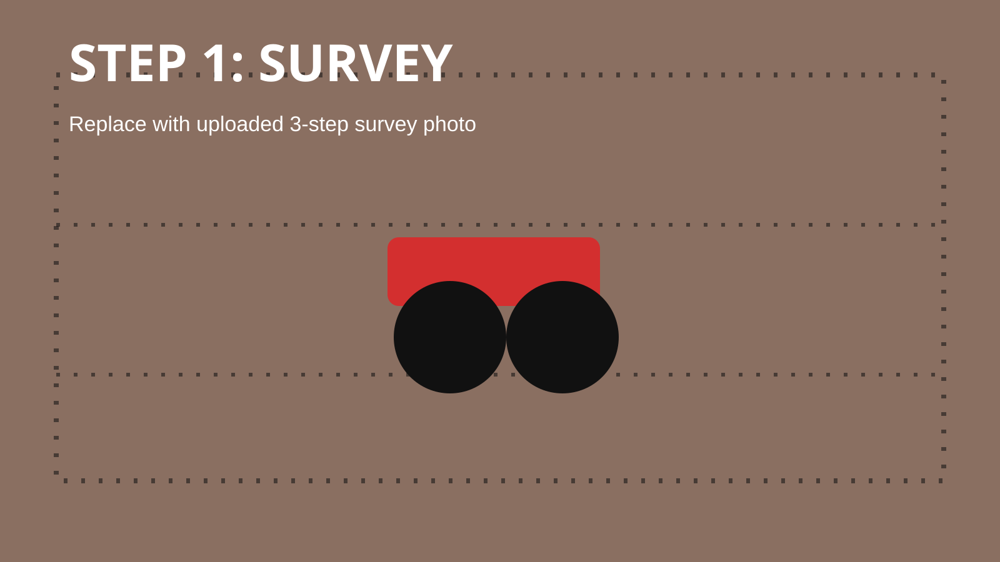

- Water stands in low spots after rain or irrigation
- High spots dry out while other areas stay wet
- Field access is delayed after water events
- Irrigation decisions become harder to manage

Landforming for working farms.
Shape the field so the water moves right.
Landforming is not about moving soil for the sake of it. It is about shaping the field so water moves evenly, irrigation is easier to manage, and the land works better season after season. We use these systems on our own farm, so we understand how they need to work in practice.
Landforming uses up to 0% less soil movement than landleveling
What Is Landforming
Precision earthmoving for fields that need to work properly.
Landforming reshapes the field surface so water can move across it properly instead of sitting in the wrong places or running away too quickly. The aim is not to make everything flat. The aim is to give the field a shape that helps water spread better, drain better, and do its job properly.
When the field shape is right, irrigation is easier to manage and crop growth is usually more even. We have seen this ourselves on our own farm. No two fields are the same, so every job starts with understanding the land first.

Before & After
Landforming changes how the whole field behaves.
- Water has a planned route across the field
- Wet and dry zones are easier to control
- The field becomes more consistent to work
- Irrigation planning starts from a better surface
Less Soil Movement
We do not flatten everything. We shape the water path.
Traditional leveling often tries to make the field flat. Landforming keeps more of the natural fall and only changes what is needed to improve flow.
Read the natural slope
We start with the field shape that is already there instead of fighting it.
Find the water problem
The survey shows low spots, high spots, and where flow is being blocked.
Move only what matters
The design targets useful cut and fill so less soil is disturbed unnecessarily.
Why It Matters
Good field shape makes farming easier.
Improve Water Flow
When the field is shaped properly, water moves more evenly across it. That means fewer wet spots, fewer dry patches, and less time fighting poor irrigation.
Increase Efficiency
Better water movement makes irrigation easier to manage and cuts down wasted water, wasted time, and unnecessary rework in the field.
Support Yield
More even water usually means more even crop establishment, steadier growth, and a field that performs more consistently from one end to the other.
Scale with Accuracy
On bigger fields, small level mistakes quickly become big problems. RTK guidance helps keep the job close to plan from start to finish so the whole field works better.

Field Output
Measured cut and fill. Practical output. Professional execution.
Good landforming comes from the right plan and steady machine control. We combine RTK guidance with practical field output so the job keeps moving without losing accuracy. The goal is not just to move soil quickly. The goal is to leave you with a field that works better when the job is finished.
Our Process
Click through the landforming process.

Step 1
Assess the field
We first look at the field problem, irrigation goal, access, crop use, and where the water is currently causing trouble.
Useful from you: field size, location pin, photos, and the main water issue.
Example Jobs
Common landforming situations we can assess.
40ha field with standing water
Problem: Water stayed in low areas after irrigation.
Work: GPS survey, flow design, controlled cut and fill.
Goal: Give water a planned route and reduce wet patches.
Pasture block with uneven irrigation
Problem: Some areas received too much water while others dried out.
Work: Shape the surface to improve spread and reduce ponding.
Goal: Make irrigation easier to manage through the season.
Maize land with high spots
Problem: High spots interrupted water movement and crop consistency.
Work: Targeted soil movement instead of flattening the whole field.
Goal: Improve field consistency with less unnecessary disturbance.
Machinery & Technology
Accuracy in the system. Performance in the field.

RTK GPS Control
RTK keeps the machine on line and helps us hold levels close to plan. That matters because better water movement starts with accurate shaping.
Hydraulic Precision
Responsive hydraulic control helps us manage cut and fill as we move, which keeps the finish cleaner and closer to the design.
Case IH 340 Power
The Case IH 340 gives steady pulling power over long runs and changing field conditions, which helps the job stay productive and controlled.
ErdVark FGT 4000
The ErdVark FGT 4000 gives consistent soil movement and a repeatable finish over larger areas. In work like this, consistency matters as much as capacity.
Landforming FAQ
Questions farmers usually ask first.
Is landforming the same as land leveling?
No. Land leveling usually focuses on making a field flatter. Landforming focuses on shaping water movement while working with the field's natural fall where possible.
Will landforming damage my topsoil?
The goal is to avoid unnecessary soil movement. A proper design helps target the areas that need work instead of disturbing the whole field without reason.
Do I need a GPS survey first?
Yes, for proper landforming. The survey tells us where the water is moving now and what cut and fill will be needed to improve the surface.
How long does a field take?
It depends on hectares, soil movement, haul distance, field access, and weather. We can give a better time estimate after seeing the field and survey data.
Can it help with waterlogging?
Often, yes. If waterlogging is caused by poor surface flow or low spots, landforming can help water move away more predictably.
Need a better field shape?